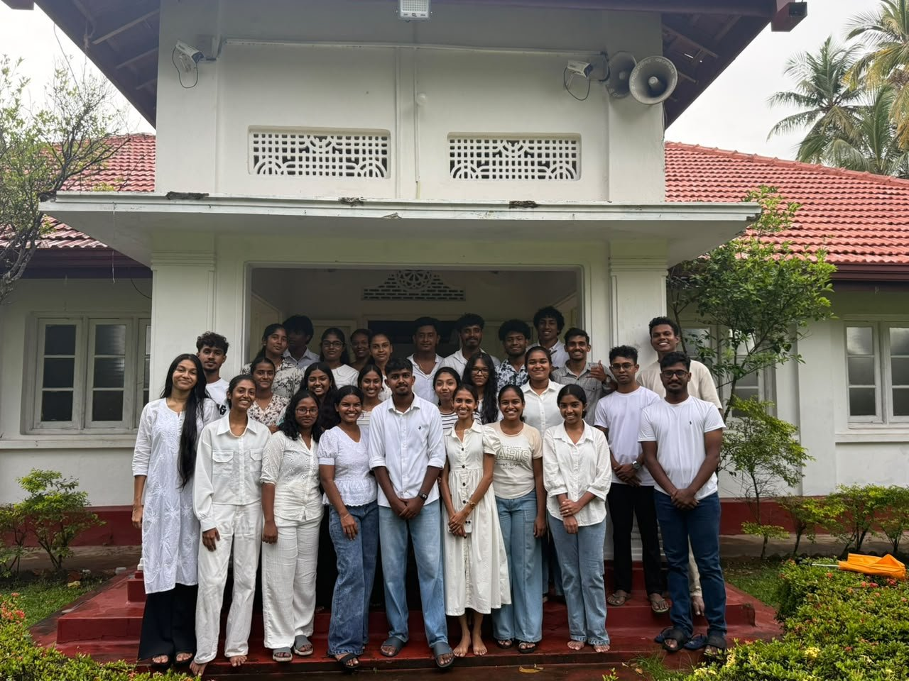
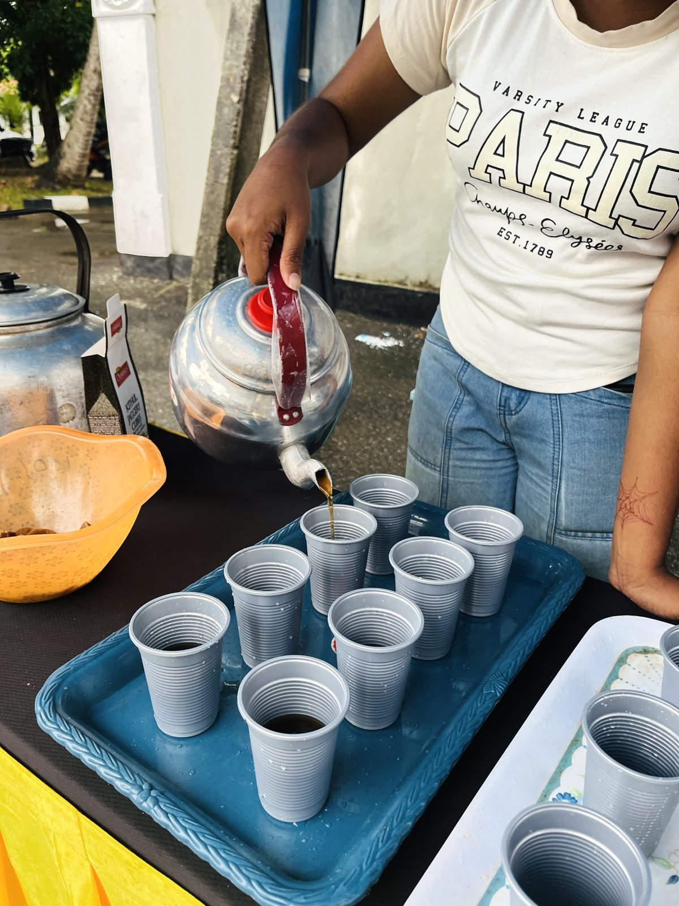
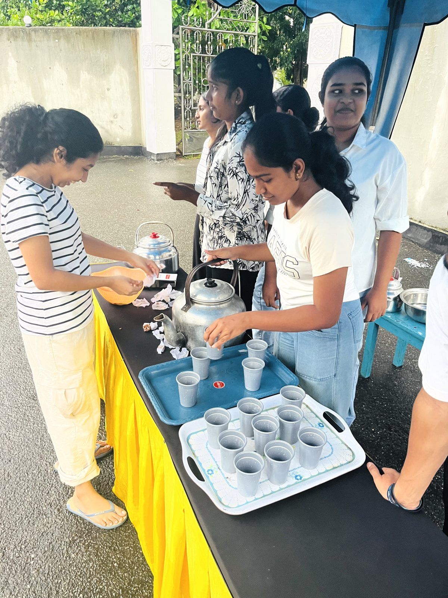
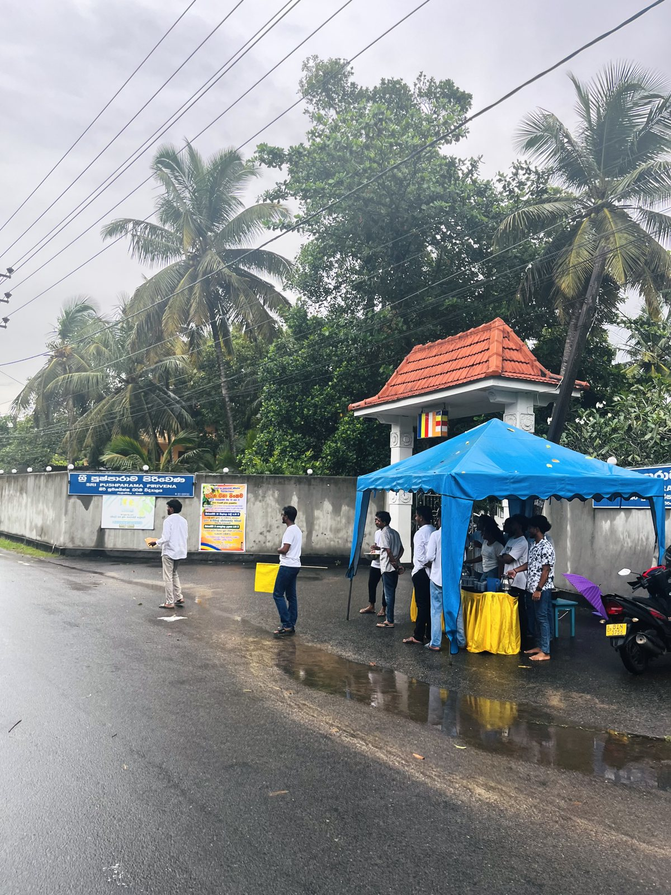
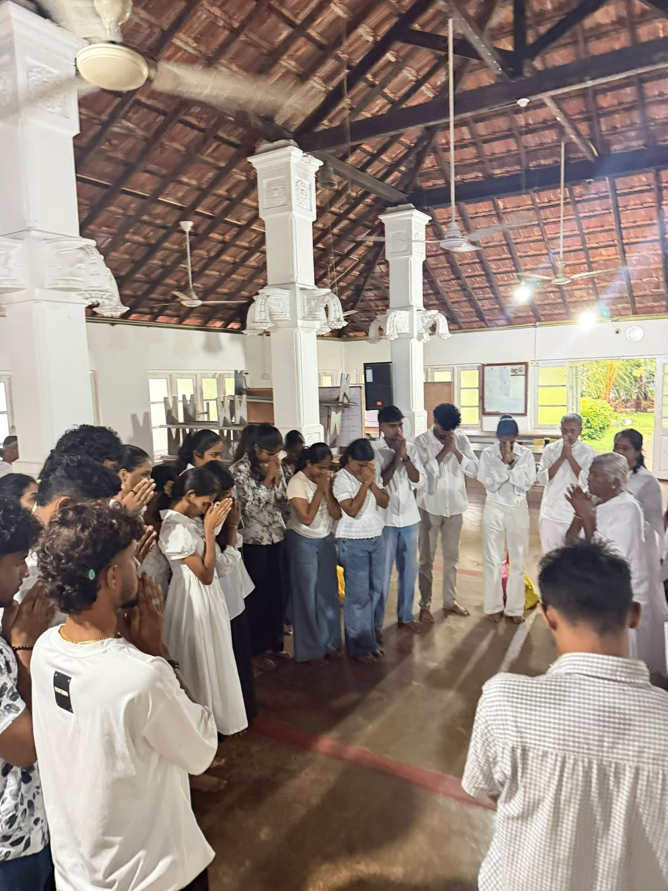
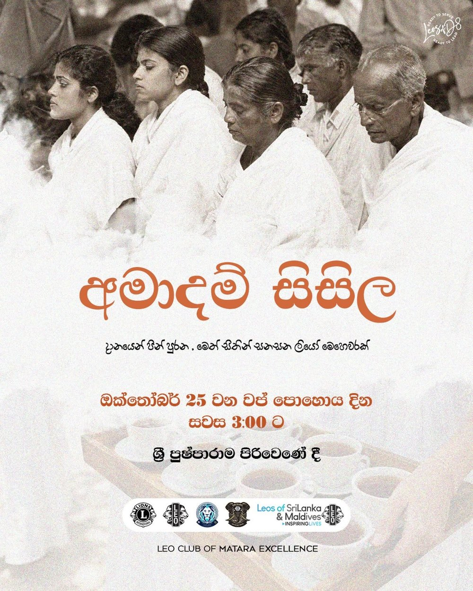

- Community Service
- 25 Oct 2026
- 3:00 PM
- Sri Pushparama Pirivena
About the project
Amadam Sisila (අමාදම් සිසිල) means the coolness of the nectar of the Dhamma. Its tagline, “a Leo mission that gathers merit through giving and soothes with loving-kindness”, shows what it was about: serving the devotees who came to Sri Pushparama Pirivena on Vap Poya.
Our members gave their afternoon, from 3:00 PM, to serve the people who gathered at the pirivena, setting up a small stall by the road and pouring cups of hot tea for everyone who passed, even through the rain. Giving (dāna) is one of the oldest ways of making merit in Sri Lankan Buddhist life, and on a Poya day it is also a simple way for young people to be useful to their neighbours. The project was successfully completed.
Why it matters
Vap Poya brings crowds to temples across the country, and the day is long. A small act of service, offered with a kind word, makes the day easier for the elderly, for families and for the monks and helpers who give their time. For our members it was a lesson in serving quietly and without any wish for credit.
Thank you
Thank you to every Leo who gave their afternoon, to our sponsors and well-wishers, and to Sri Pushparama Pirivena for hosting us.
Photos from the day
A few moments from Vap Poya at Sri Pushparama Pirivena. Tap a photo to see it full size.




